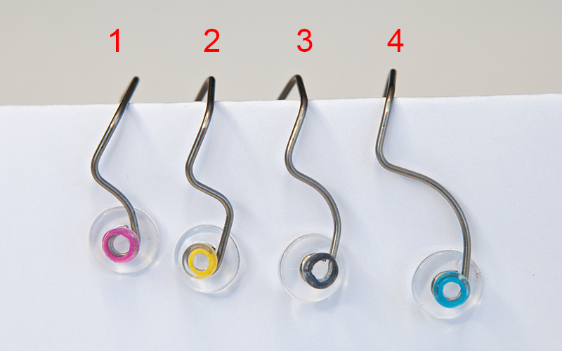

Getting started with AdHawk MindLink glasses
Welcome to the world of wireless eye tracking! Thanks for using AdHawk’s technology as part of your Hack the North project.
System components
The simplest project you can create using wireless AdHawk MindLink glasses involves:
- wireless MindLink glasses
- one of the provided SDKs (python, Dart/Flutter)
- a computer that supports Bluetooth (e.g., laptop, desktop, smartphone)
The glasses stream real-time eye tracking data to your application via Bluetooth.
AdHawk MindLink glasses
As a wireless product, there are some operational details to be aware of.
Turning on and off
To turn the glasses on, press the button on top of the arm. The LED will be flash green twice to indicate the glasses are powered on and ready to use.
If the LED is red, an error has occurred. Reach out to AdHawk for help.
When the glasses are plugged in, they will be automatically turned on.
Charging
MindLink glasses have a battery life of about 2.5 hours when fully charged.
The glasses can be charged using a standard USB cable (the glasses have a micro USB socket). Your hardware kit includes both a USB-C to micro USB cable, and a USB-A to micro USB cable.
When charging, the LED will flash green. When fully charged, the LED will be solid green.
You can continue to use the glasses while they are charging: the Bluetooth connection will be maintained and the glasses will operate normally. When the glasses are plugged in, they will be automatically turned on.
LED state summary
| State/Goal | Action | LED |
|---|---|---|
| Turn on | Press button | Flash green twice |
| Turn off | Press button | Off |
| Charge | Plug in via micro USB | Flash green |
| Fully charged | Plug in via micro USB | Solid green |
| Error | N/A | Red |
Developing with wireless MindLink glasses
Your general flow should be:
- choose a development platform:
- mobile development with the Flutter SDK
- PC development (Windows, Mac, Linux) with the Python SDK
- get the SDK
- build and run the sample app
- get your glasses fitting properly
- build something cool using the sample app as a base (or copy+paste a lot)
Supported platforms
SDKs are available for Dart/Flutter (Android, iOS) and Python (Windows, Mac, Linux). The glasses connect to either a smartphone or computer over Bluetooth. Pairing is not required.
Mobile with Flutter
The provided Flutter SDK provides:
- easy to use Flutter package for connecting MindLink glasses over BLE
- sample application which demonstrates
- how to scan for and connect to MindLink glasses
- stream eye tracking data
- stream IMU sensor data
Much more information and instructions can be found in the Flutter SDK docs.
Desktop with Python
The Python SDK is provided through pypi (adhawk-ble).
An example application, available on github, shows how to use this SDK to:
- how to scan for and connect to MindLink glasses
- stream eye tracking data
- stream IMU sensor data
There is also a standalone application to help with fitting and calibration, available on Google Drive. This can be used to assess and improve fitting to get better eye tracking.
More information and instructions can be found in the Python SDK docs.
Eye tracking basics
Gaze
Gaze refers to where the eyes are looking (including how far you’re looking—the vergence depth). The wireless MindLink glasses will provide a 60 Hz stream of gaze measurements, represented as a gaze point. The gaze point (x, y, z) is the estimated coordinates for the user’s gaze, relative to the midpoint of the scanners.
- a gaze point (x, y, z) in metres, relative to the scanner midpoint
The z component of this gaze point corresponds to how far away someone is focused based on the measured angle between left and right eyes.
Read up on the AdHawk coordinate system if you need to.
Eye center
Eye center refers to the position of each eye center relative to the scanner midpoint (the mid-point of the line between the two scanners in the glasses frame).
- left eye center (x, y, z)
- right eye center (x, y, z)
The eye center information can be useful in knowing when the glasses move on someone’s face.
Read up on the AdHawk coordinate system if you need to.
Pupil diameter
Your pupil will expand and contract to control the amount of light let in. There is also research to suggest that pupil diameter will change based on elements of cognitive state.
The pupil diameter measurement is largely a relative one—a baseline should be established for a given person, cognitive state, and lighting conditions. Experimental pupil diameter measurements should be compared against that baseline. Knowing the stimuli or change in conditions, that relative pupil diameter measurement can provide insights into cognitive state, for example.
- left pupil diameter in millimeters
- right pupil diameter in millimeters
Blink events
Blinks are captured and relayed as events. Blink duration, as well as the timestamp associated with the event (when the blink finished) are available as part of the event stream. Winks are not supported with this version of the SDK.
- blink duration in milliseconds
There are also events related to when an eye closes and opens (see the examples for more information).
IMU data
A stream is provided to make IMU data (from the glasses) available in quaternion format.
AdHawk coordinate system

The coordinate system used for the gaze outputs is centered at the midpoint of the scanners with:
- X is oriented in the positive direction to the right (user’s point of view)
- Y is oriented in the positive direction going up
- Z is oriented in the positive direction when behind the user
Troubleshooting
Poor gaze accuracy
- ensure you’re using the correct nosepiece and the glasses are ideally positioned; this will likely change from person to person so either designate someone to be the ‘glasses wearer’ or remember to re-fit the glasses as necessary
- use the eyes screen in the sample Flutter app or the standalone fitting application to confirm your fit is reasonable
Bluetooth connection issues
Each pair of wireless MindLink glasses has a unique Bluetooth identifier (e.g., MINDLINK-264). This will help ensure you’re working with your specific glasses and they have an active Bluetooth connection.
If your glasses are connected via Bluetooth to one computer (smartphone, laptop, etc.), you will need to disconnect them before establishing a connection on a different computer (smartphone, laptop, etc.).
Fitting
Eye tracking systems are largely comprised of physical sensors positioned near the eyes themselves. To ensure great eye tracking, you need to optimize the position of those sensors.
There are two stages to fitting:
- choosing the correct nosepiece for your face
- learning the ideal and comfortable placement of the glasses on your face
Nosepieces
The fit of your AdHawk MindLink glasses is influenced by the type of nosepiece used as well as the position of the glasses on your nose. There are four nosepieces included in the kit. The four nosepieces are identified by coloured bands on the nose pads as shown below:

The nosepieces have been designed to accommodate different face and nose shapes to maintain a consistent glasses position relative to the eyeball. They follow the trend shown below:

In theory, nosepieces either change the height at which the glasses sit on your face or change the distance the glasses sit from the eye (relief). However, a combination of these may happen concurrently. In general, as you increase the nosepiece number it will add height to the glasses and increase the relief. The table below describes the change in glasses fit between the four nosepieces.
| Nosepiece # | Purpose | Colour |
|---|---|---|
| 1 | Reduce Height (-Y) | Pink |
| 2 | Reduce Relief (-Z) | Yellow |
| 3 | Baseline | Black |
| 4 | Increase Height (+Y) | Blue |
In order to determine the correct height the pupil should be located mid-way between the top and bottom of the frame.

People of East Asian descent tend to have shallower noses and a shorter relief from the nose bridge to the surface of the cornea. For Asian faces it is recommended to begin with nosepiece 4 (blue). Look at the side profile to see if the nosepiece needs to be swapped.
Changing nosepieces
A nosepiece may be inserted or removed from the glasses by gently pinching the nosepads towards each other and sliding the bridge of the nosepiece into or out of the channel on the glasses. The index finger of the opposite hand can be used to guide the nosepiece in place. The nosepiece will snap in place once inserted fully.

Checking the glasses fit
The eyes page in the sample Flutter app can be used to see if the glasses fit properly for great eye tracking.
- move the glasses up and down; notice how the black frames in the app moves up and down to match the relative position
- adjust the position of your glasses so that the black frames in the app ‘snap’ to the gray frames (which represents the ideal position)
- you may need to make adjustments in and out (to adjust the ‘relief’ of the glasses on your face), or up and down (to adjust the height of the glasses on your face)